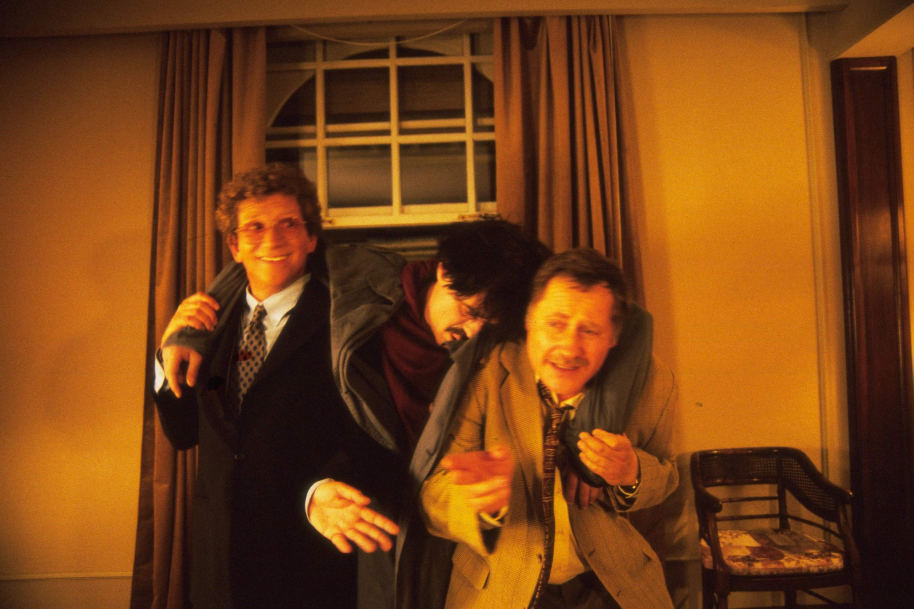

A miniszter félrelép
|  | Történet | Szereplők | |
IsmertetőVitt Péter miniszter helyett mindig titkára, Galamb Sándor viszi el a balhét. De most aztán alaposan benne van a pácban a cinikus kormánytag. Az Astoria szállóba egy kis kellemes este reményében azt tervezi, hogy az ellenzéki titkárnővel eltölt egy remek estét, míg titkárát elküldi a Parlamentbe az éjszakai gyűlésre. Már kezdenék jól érezni magukat a hotelben mikor egyszercsak találnak egy hullát a szobában. A miniszter rögtön felhívja titkárát aki azon nyomban elindul a szállóba. Mikor megérkezik, elmondják a tervet, hogy, hogyan kerüljenek ki ebből a balhéból, és az egészet a titkára vigye el. De tervük már az elején dugába dől, mert nem kívánt személyek tűnnek fel. Megjelenik a szállodaigazgató, aki egy betörőt keres, egy szobapincér aki lesi mikor jöhet újra, hogy sok borravalót kapjon, betoppan a féltékeny férj is és nagy balhékat rendez, majd ebben a nagy felfordulásban még a hulla is lábra kap. Források: Wikipédia |
|||